Luminous riproduce la musica che hai già sul computer. Non ti serve una libreria per iniziare.
Ascolta subito qualcosa
•
In Ascolta musica, scegli Apri file o Riproduci una cartella.
•
Oppure trascina file e cartelle nella finestra.
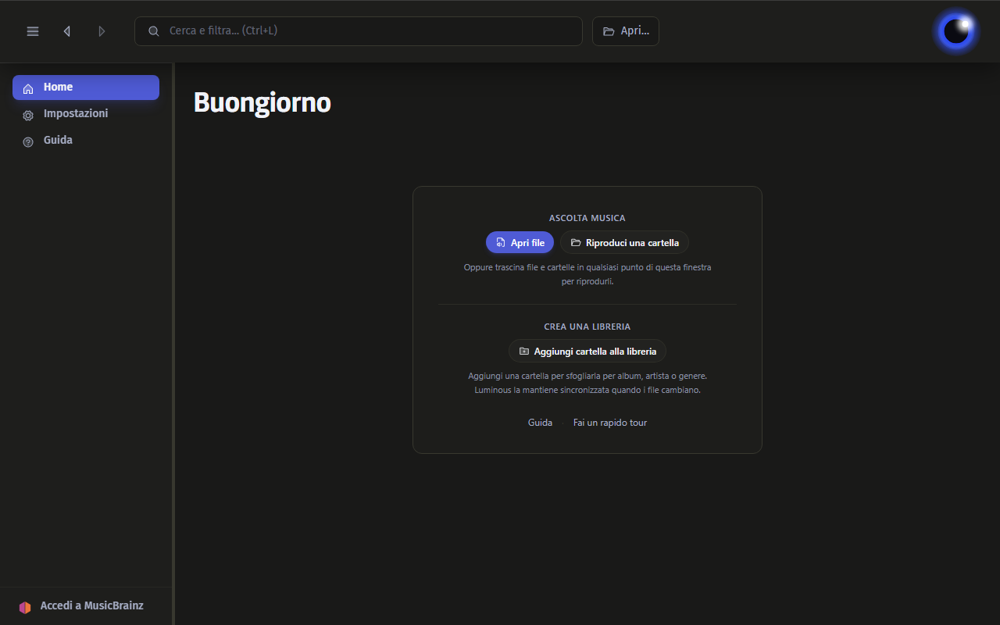
Crea una libreria
1
Scegli Aggiungi cartella alla libreria in Crea una libreria, oppure aggiungi una cartella in Impostazioni → Sorgenti.
2
Luminous la analizza e poi continua a monitorarla. I file nuovi, spostati e rinominati si aggiornano da soli.
3
Esplora la tua musica in Raccolta, nella barra laterale.
Home
•
La Home mostra un quadro aggiornato della tua libreria e dei tuoi ascolti.
•
Album più ascoltati classifica gli album in base ai minuti riprodotti questa settimana. Un badge Rientro segnala un album tornato in classifica.
•
Imposta il giorno di inizio della settimana con Inizia la settimana di in Impostazioni → Generale.
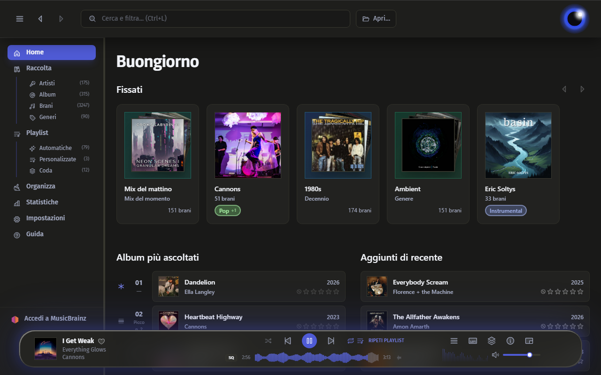
Fai il tour
•
Sei nuovo di Luminous? Una breve presentazione ti mostra l'interfaccia.
•
Rivedila quando vuoi con Riavvia la presentazione delle funzionalità in Guida.
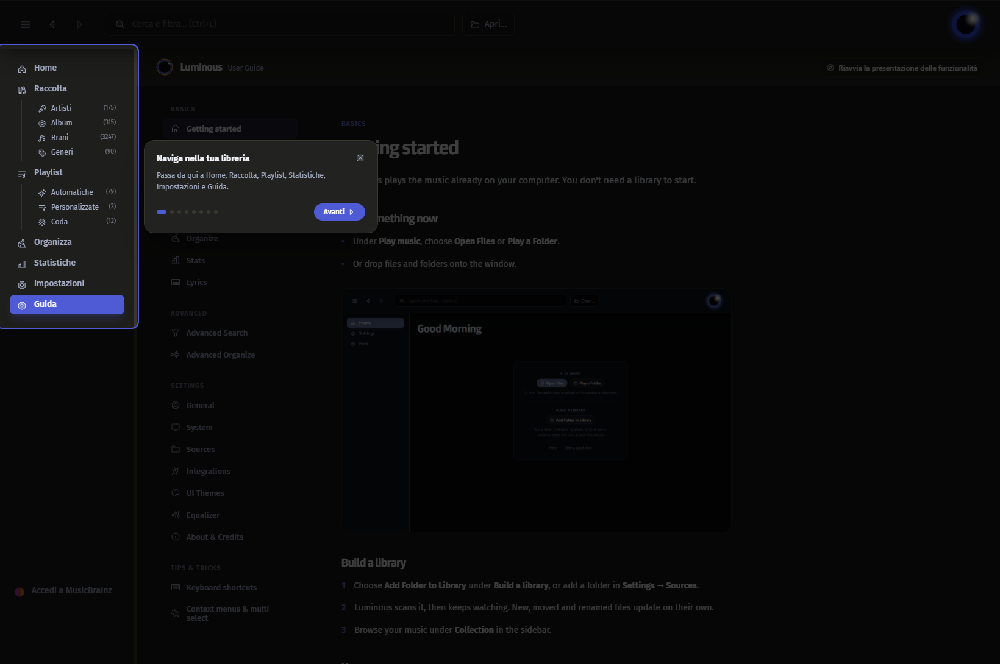
Nozioni di base
La tua raccolta
Raccolta, nella barra laterale, ha quattro viste: Artisti, Album, Brani e Generi. Ognuna mostra un conteggio e un controllo di ordinamento in alto a destra.
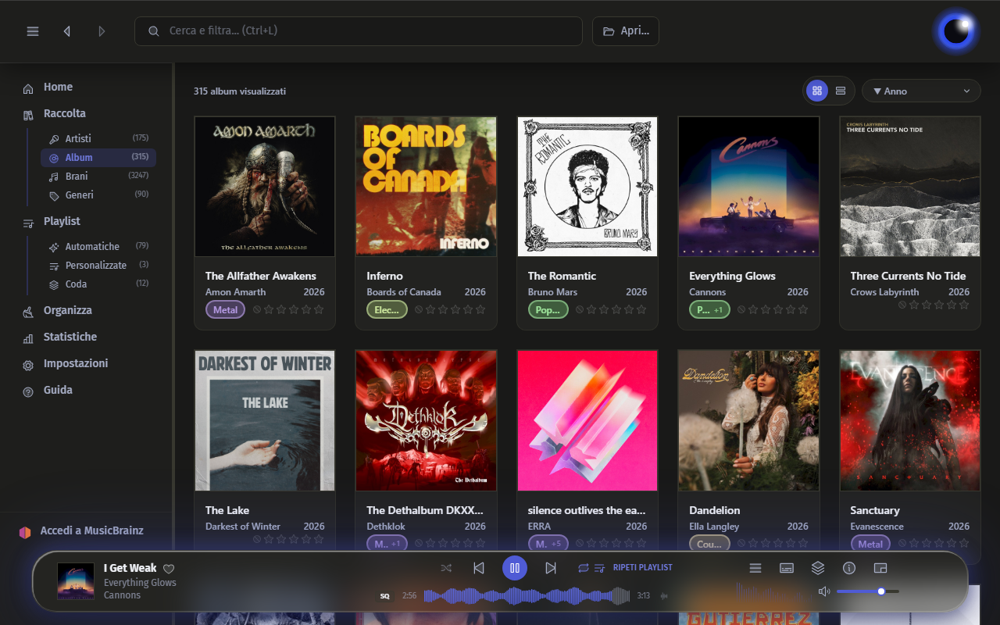
Brani
•
Vedi l'intera libreria come una tabella ordinabile.
•
Fai clic con il tasto destro sull'intestazione di una colonna per scegliere i campi da mostrare, come Numero di riproduzioni e Numero di salti.
•
Trascina il bordo destro dell'intestazione di una colonna per ridimensionarla. Fai doppio clic sul bordo per ripristinarne la larghezza.
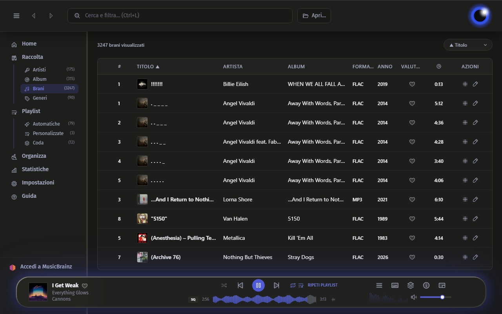
Generi
•
Ogni genere è una scheda. Il suo conteggio dei brani include i sottogeneri.
•
Trascina il chip di un sottogenere su un'altra scheda per spostarlo, oppure trascina la maniglia di una scheda per trasformare l'intero genere in un sottogenere.
•
Fai clic con il tasto destro su un chip o sull'intestazione di una scheda per Rinomina, Promuovi a genere di primo livello o Elimina il genere da tutti i brani.
•
Fai clic sul campione di colore di una scheda per cambiarne il colore.
•
Fai clic su una scheda o su un chip per aprire la sua playlist automatica.
•
I tag che aggiungi nelle pagine degli artisti hanno le proprie schede in Tag degli artisti, sopra i generi dei brani.
•
In alto a destra, passa dalla vista a schede a quella a righe e ordina per nome o per numero di brani.
•
I brani senza genere sono raggruppati in Nessun genere.
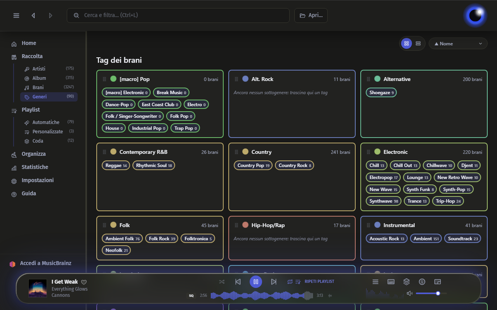
Album
•
Apri un album per vedere le sue tracce. Il pannello laterale mostra formato, bitrate, frequenza di campionamento e volume del file in riproduzione.
•
Fai clic su + per aggiungere l'album o un brano alla playlist attiva (la coda, a meno che tu non ne scelga un'altra).
•
Fai clic sulla matita per aprire Modifica tag dell'album e correggere in una volta sola titolo, artista, genere o anno di tutte le tracce.
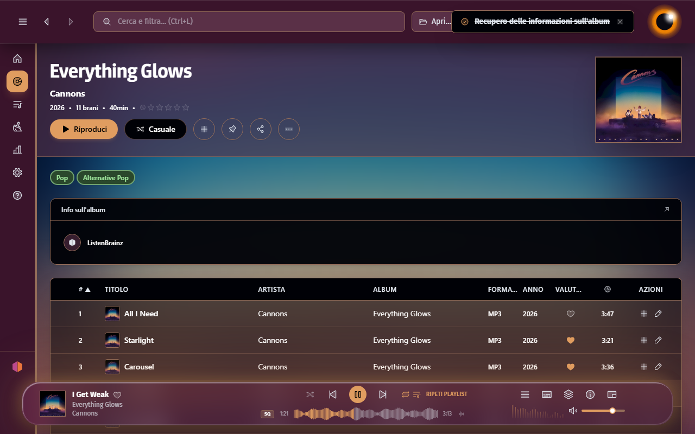
Modifica dei tag
•
Fai clic sulla matita di una traccia per aprire Modifica tag del brano.
•
Artista, Artista album, Compositore e Genere accettano più valori. Premi Invio dopo ciascuno.
•
Rimuovi copertina elimina la copertina incorporata della traccia.
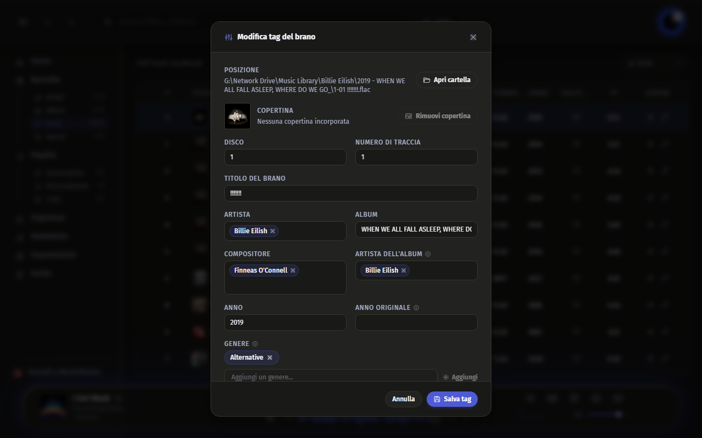
Artisti
•
La pagina di un artista elenca le uscite in Discografia: album, EP e singoli, poi le playlist in cui compare l'artista.
•
Fai clic su Modifica per aggiungere una biografia, un sito web e link come Bandcamp, Spotify o Instagram. Compaiono nel pannello Informazioni dell'artista.
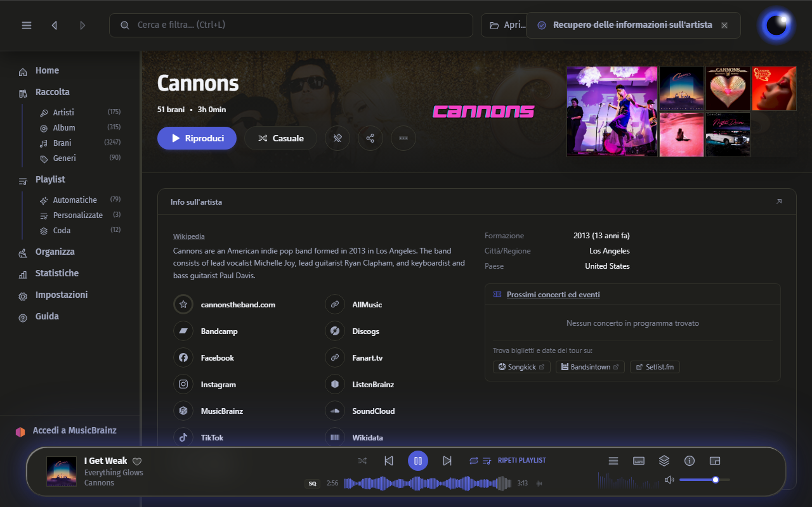
Nozioni di base
Ricerca ed esplorazione
Un'unica barra di ricerca trova brani, album, artisti e playlist.
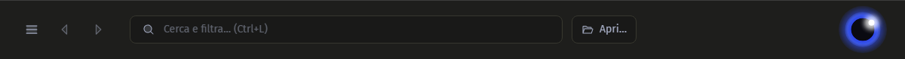
1
Premi CtrlL oppure fai clic sulla barra di ricerca.
2
Inizia a digitare. I risultati compaiono mentre scrivi.
3
Usa le frecce indietro e avanti accanto alla barra di ricerca per ripercorrere i tuoi passi.
•
Fai clic su Apri… (CtrlO) per riprodurre file da qualsiasi posizione del computer.
•
Fai clic sul logo di Luminous per attivare o disattivare il suo pulsare a ritmo di musica.
La barra del lettore si trova in basso nella finestra mentre la musica è in riproduzione.
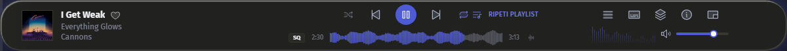
Barra del lettore
•
Fai clic sulla copertina per aprire la modalità immersiva (Ctrl2).
•
Fai clic sul cuore o sulle stelle per valutare il brano. Scegli lo stile in Impostazioni → Generale.
•
Fai clic sulla forma d'onda per saltare a un punto del brano. Il pulsante accanto passa alle bande di frequenza: blu per i bassi, ambra per le medie, bianco per le alte.
•
Casuale passa in rassegna No, Tutto e:
– Nell'album: album in ordine, brani mescolati all'interno di ciascuno.
– Album: album mescolati, brani in ordine.
– Artisti: un artista alla volta, artisti scelti a caso.
•
Ripeti passa in rassegna No, Brano, Album e Playlist.
•
I pulsanti a destra aprono:
il menu del brano
i testi
la coda
il pannello informazioni (CtrlI)
il miniplayer (CtrlM)
•
I tasti multimediali e i controlli multimediali del sistema funzionano anche quando Luminous non è in primo piano.
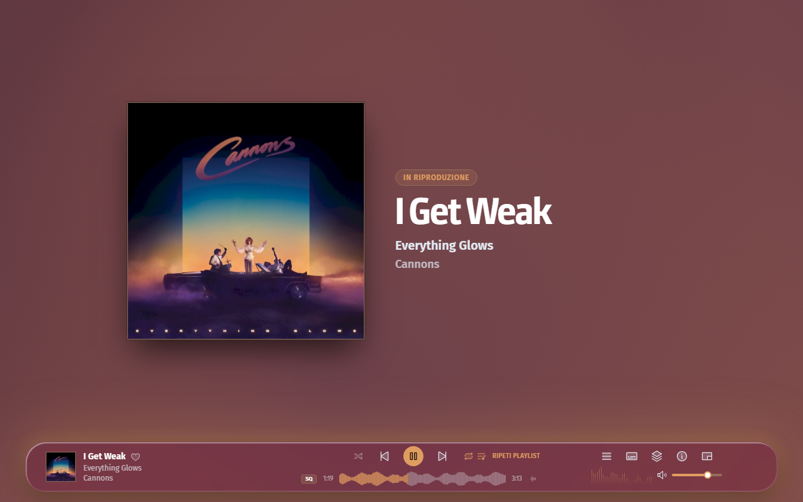
Miniplayer
•
Passa il mouse sul miniplayer per mostrare i controlli e valutare il brano.
•
Trascina il suo bordo superiore per spostarlo.
•
Usa il pulsante dei testi per passare dalla copertina ai testi in tempo reale.
•
Fai clic su Ripristina finestra intera (CtrlM), in basso a destra, per tornare indietro.
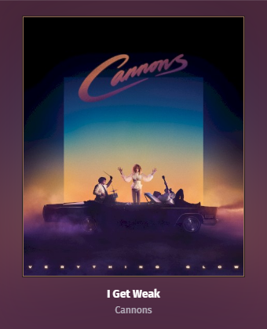
A riposo
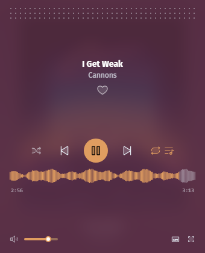
Al passaggio del mouse
Nozioni di base
Playlist
Esistono tre tipi di playlist:
•
Personalizzate: la crei tu, trascinandoci dentro i brani.
•
Intelligenti: imposti delle regole, come «Genere è Rock e Anno è successivo al 2015», e Luminous la mantiene aggiornata.
•
Automatiche: playlist per genere, decennio e BPM che Luminous crea da sé, con fino a 25 brani aggiornati ogni giorno. Ognuna compare quando 25 brani corrispondono. Fai clic su Aggiorna playlist per una nuova selezione.
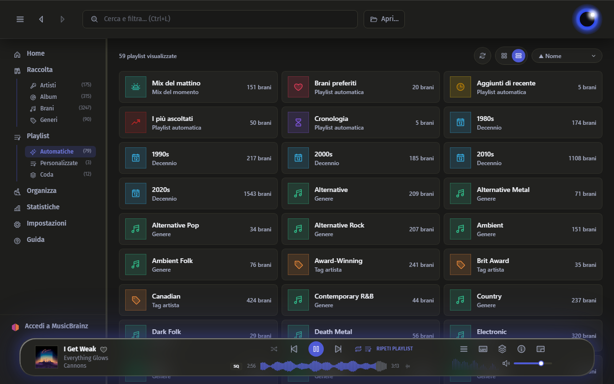
Aggiungi brani
•
Fai clic su + accanto a un brano o a un album per aggiungerlo alla coda.
•
Per aggiungerlo a un'altra playlist, fai prima clic su Rendi attiva su quella playlist.
•
Trascina file o una cartella nella finestra per sostituire la coda e riprodurli. Tieni premuto Maiusc per aggiungerli invece alla fine.
Playlist intelligenti
•
Fai clic su Nuova playlist intelligente, aggiungi le regole, poi assegna un nome e salvala.
•
Usa Modifica regole per cambiarle in seguito.
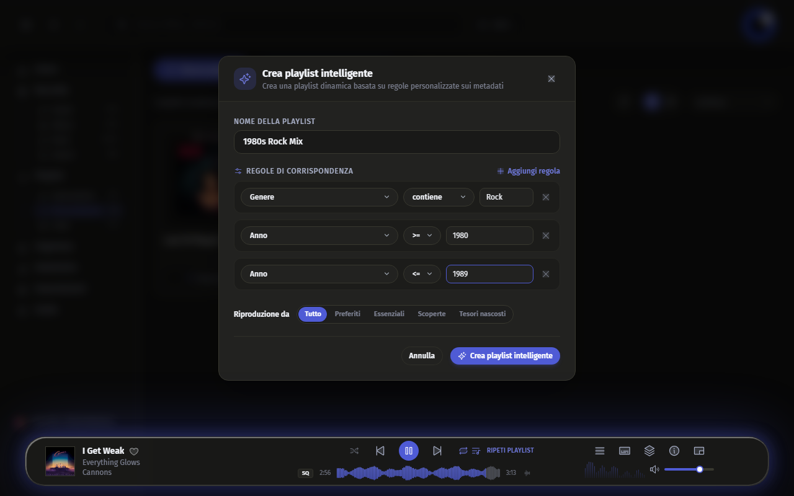
Playlist per BPM
Le playlist per BPM usano il tag BPM di ogni brano. Luminous non misura il tempo, quindi i brani senza tag BPM non sono inclusi. Crea i tuoi intervalli con una playlist intelligente.
Categoria
Intervallo di BPM
BPM tempo lento
60–90
BPM tempo medio
90–115
BPM tempo veloce
115–130
BPM alta energia
130–150
BPM estremi
150+
Gestisci una playlist
•
Fai doppio clic sul nome per rinominarla.
•
Trascina le righe per riordinarle. Selezionane più di una per spostarle insieme.
•
Fai clic sull'intestazione di una colonna per ordinare, oppure scrivi nella casella del filtro per restringere l'elenco.
•
Usa i pulsanti di rimozione per eliminare i brani duplicati o non disponibili, e Svuota playlist per svuotarla.
•
Fai clic con il tasto destro sull'intestazione di una colonna per aggiungere la colonna Data di aggiunta.
Importa ed esporta
•
Importa o esporta playlist .m3u, .m3u8, .pls e .xspf.
•
Quando esporti, scegli Usa percorsi dei file relativi (portatili) in modo che la playlist funzioni ancora in un'altra cartella o su un altro computer.
Nozioni di base
Statistiche
Statistiche mostra i tuoi ascolti, calcolati sul tuo computer e mai inviati altrove.
•
Scegli Ultimi 7 giorni, Ultimi 28 giorni o Ultimo anno.
•
Vedi i tuoi artisti, album, brani e generi più ascoltati. Fai clic su uno per aprirlo.
•
La mappa di calore mostra i minuti ascoltati ogni giorno, con la tua Serie attuale e la tua Serie più lunga.
•
Ora del giorno mostra quando ascolti di più.
•
Per escludere qualcosa, fai clic con il tasto destro su di esso in qualsiasi punto e scegli Non includere nelle statistiche.
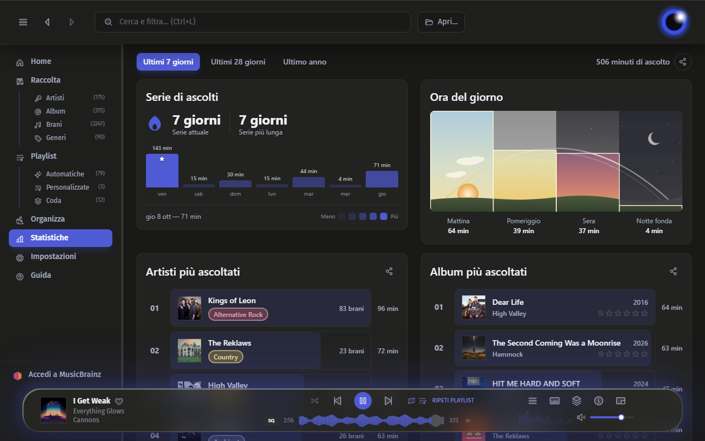
Nozioni di base
Testi
Attiva Testi nella barra del lettore. La riga corrente si evidenzia a tempo con la musica.
•
Fai clic su una riga per saltare a quel punto.
•
Recupera di nuovo cerca di nuovo i testi.
•
Modifica corregge il testo o la sincronizzazione.
•
I testi senza marcatori temporali vengono mostrati come testo semplice.
•
Per un brano strumentale, scegli Contrassegna come strumentale così Luminous smette di cercare.
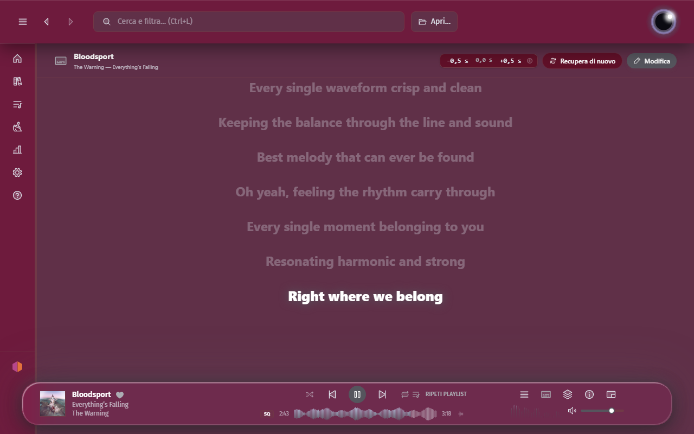
Avanzate
Ricerca avanzata
Digita termini field:value nella barra di ricerca per filtrare l'intera libreria. Per esempio, genre:rock rating:>=4 trova i brani rock valutati con 4 stelle o più.
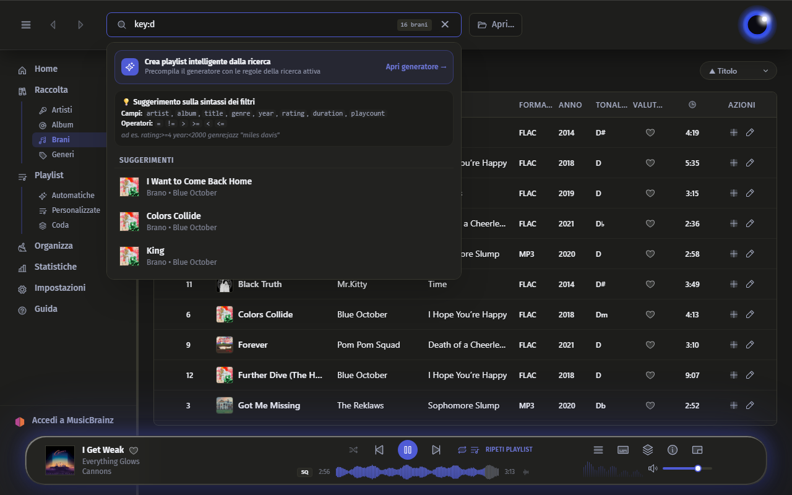
Sintassi
•
Un campo di testo senza operatore significa contiene: genre:rock corrisponde a qualsiasi genere che contenga «rock».
•
Un campo numerico senza operatore significa esattamente: year:1994 corrisponde solo al 1994.
•
Se ci sono più termini, devono corrispondere tutti: rating:>=4 year:<2000 genre:rock.
•
Le parole senza due punti cercano in titolo, artista e album: rating:>=4 "tom cochrane".
•
Metti tra virgolette i valori con spazi: artist:"tom cochrane". I nomi dei campi non distinguono tra maiuscole e minuscole.
Operatori
Simbolo
Significato
=
uguale a
!=
diverso da
>
maggiore di
>=
maggiore o uguale a
<
minore di
<=
minore o uguale a
(nessuno)
contiene (testo) / uguale a (numerico)
Campi
Ogni campo funziona nella barra di ricerca e come regola di una playlist intelligente.
Quando la ricerca contiene un termine field:value, fai clic su Apri generatore → nel menu a discesa. Ogni termine diventa una regola; aggiungine altre, assegna un nome alla playlist e salvala.
Esempi
Obiettivo
Query
Brani rock con 4 o più stelle usciti prima del 2000
rating:>=4 year:<2000 genre:rock
Brani nella tonalità di re
key:d
Tracce ad alto tempo (120–130 BPM)
bpm:>=120 bpm:<=130
Mix di testo libero e campi
rating:>=4 "tom cochrane"
Solo album compilation
compilation:1
Tracce di oltre 3:30
duration:>3:30
Avanzate
Organizzazione avanzata
Scrivi il tuo schema scegliendo Personalizzato nella pagina Organizza.
Variabili dello schema
Combinale con il tuo testo. Racchiudi una parte tra { } per ometterla quando la traccia non ha quel valore; terminala con / all'interno delle parentesi graffe per trasformarla in una cartella.
Variabile
Viene sostituita da
%albumartist
L'artista principale dell'album
%artist
L'artista della traccia
%album
Titolo dell'album
%disc
Numero del disco
%track
Numero di traccia
%title
Titolo della traccia
%year
Anno di uscita
%genre
Genere
%track3
Numero di traccia, con zeri iniziali fino a tre cifre
%rawtrack
Numero di traccia esattamente come memorizzato nel tag, senza zeri iniziali
Esempi
%disc-%track
2-07
Disc %disc
Disc 2
%year - %album
2019 - Reservoir
{%album/}
Aggiunge una cartella con il nome dell'album, solo se la traccia ce l'ha
{%disc-}%track
Omette «1-» quando non c'è il numero del disco: 07 oppure 1-07
{%track }%title
Aggiunge «07 » prima del titolo, solo se c'è il numero di traccia
{%track-}%title
Aggiunge «07-» prima del titolo, solo se c'è il numero di traccia
Impostazioni
Generale
•
Lingua / Language: la lingua di menu, pulsanti, messaggi e di questa guida.
•
Inizia la settimana di: domenica o lunedì, per classifiche e statistiche settimanali.
•
Stile di valutazione dei brani: un cuore, 5 stelle o entrambi.
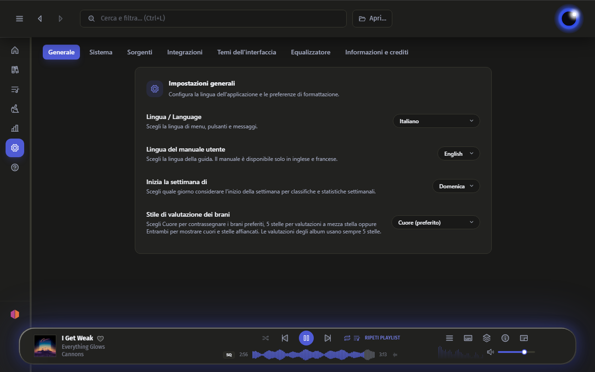
Impostazioni
Sistema
•
Imposta Luminous come lettore musicale predefinito (Windows): apri le App predefinite di Windows per scegliere quali tipi di file apre Luminous.
•
Riduci nell'area di notifica: se chiudi la finestra, Luminous si nasconde nell'area di notifica. Fai clic con il tasto destro sull'icona per Riproduci/Pausa, Brano successivo e Brano precedente.
•
Avvia all'accesso: avvia Luminous quando accedi.
•
Esporta diagnostica: salva un file di log con gli arresti anomali e gli errori recenti da allegare a una segnalazione di bug.
•
Posizione di archiviazione dei dati: dove vengono conservati il database della libreria, la cache delle copertine e le preferenze. Lo ZIP per Windows funziona in Modalità portatile e conserva tutto in una cartella data accanto all'app. Le cartelle di musica sulla stessa unità la seguono quando l'unità riceve una nuova lettera su un altro computer. Su Linux, metti un file vuoto chiamato portable accanto all'AppImage per ottenere lo stesso risultato.
•
Aggiornamenti: cerca una nuova versione e scegli cosa succede quando ce n'è una. Le installazioni da Microsoft Store si aggiornano da sole.
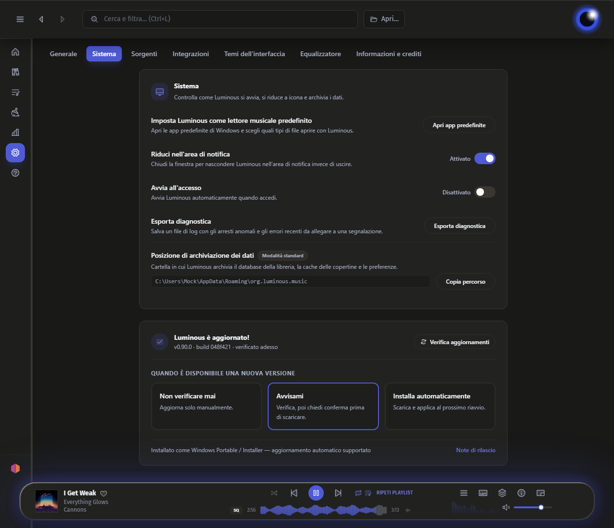
Impostazioni
Sorgenti
Cartelle
•
Fai clic su Aggiungi cartella alla libreria per aggiungere una cartella di musica. I file nuovi e modificati compaiono da soli.
•
Disattiva Monitoraggio delle cartelle in tempo reale per cercare le modifiche solo quando riesegui la scansione.
•
Riesegui scansione libreria all'avvio controlla le cartelle ogni volta che si apre Luminous.
•
Riesegui scansione libreria cerca le modifiche; Forza scansione completa rilegge tutto.
•
Salva le copertine accanto alla musica salva le copertine come cover.jpg nelle cartelle degli album e le foto degli artisti come artist.jpg. Le immagini già presenti nelle cartelle non vengono mai sovrascritte.
•
Se una cartella risulta non disponibile perché la lettera dell'unità è cambiata o hai spostato la musica, fai clic su Individua… e scegli la nuova posizione. I brani mantengono conteggi delle riproduzioni, valutazioni e playlist.
•
Per spostare una cartella ancora disponibile, fai clic su Modifica dettagli della cartella, poi su Cambia posizione….
Musica remota
•
WebDAV remoto: ascolta in streaming da Nextcloud, ownCloud, Synology e altri server WebDAV.
•
Server multimediali: collega un server OpenSubsonic come Navidrome, Gonic o LMS. Luminous sincronizza la sua libreria e può segnalare i tuoi ascolti.
•
La musica remota è di sola lettura: le modifiche ai tag e alle copertine restano in Luminous.
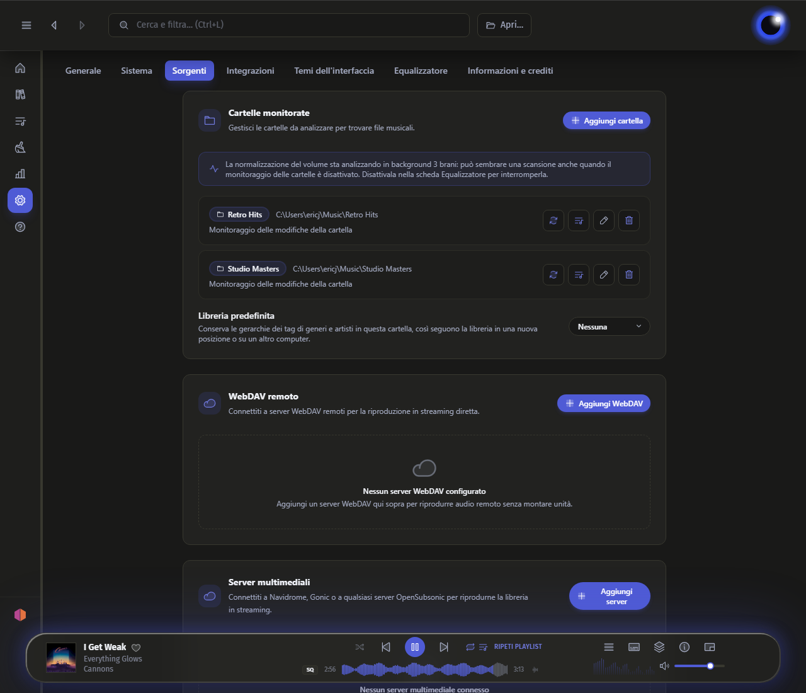
Impostazioni
Integrazioni
Ogni integrazione è facoltativa. Disattivane una qualsiasi per mantenere offline quella parte di Luminous.
•
Servizi online: l'interruttore generale in alto a destra. Impostalo su Offline e Luminous non invia richieste a servizi esterni (copertine, testi, biografie, ListenBrainz, accesso a MusicBrainz, Discord Rich Presence e controllo degli aggiornamenti); i testi e le copertine salvati restano visibili e le tue librerie Subsonic e WebDAV continuano a funzionare.
•
Scrobbler ListenBrainz: incolla il tuo Token utente, fai clic su Convalida e salva, poi attiva lo scrobbling. Scegli se inviare anche le valutazioni. Attiva o disattiva le trasmissioni di «in riproduzione» e metti in pausa lo scrobbling dal popup del profilo MusicBrainz nella barra laterale.
•
Metti in pausa tutto lo scrobbling (nel popup del profilo nella barra laterale o nell'area di notifica) interrompe l'invio senza scollegare. Gli ascolti fatti offline restano in attesa finché non fai clic su Sincronizza ora.
•
MusicBrainz Picard: Luminous trova Picard oppure ti permette di cercarlo, così puoi aprire i file in Picard.
•
Discord Rich Presence: mostra su Discord quello che stai ascoltando. L'app desktop di Discord deve essere in esecuzione.
•
fanart.tv: recupera foto degli artisti e altre immagini che Luminous non trova in locale. Aggiungi la tua chiave API e fai clic su Convalida e salva. Senza una chiave, Luminous usa le immagini di Wikidata.
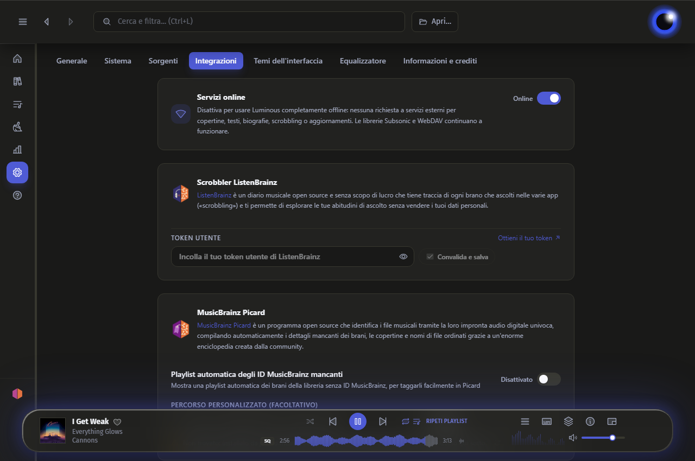
Nozioni di base
Organizza
Rinomina e sposta i file in base ai loro tag. Non cambia nulla finché non fai clic su Organizza musica.
1
Scegli uno schema: Predefinito, Alternativo o Personalizzato per scrivere il tuo. L'albero qui sotto mostra l'anteprima del risultato.
2
Scegli una destinazione: la cartella originale della libreria, oppure Personalizzata... per sceglierne un'altra.
3
Scegli se spostare i file associati, sostituire gli spazi con trattini bassi e convertire le lettere accentate.
4
Controlla l'anteprima. Elenca solo i file che verranno spostati, con la posizione precedente e quella nuova.
5
Fai clic su Organizza musica.
•
Attiva Organizzazione automatica in alto a destra (oppure in Impostazioni → Sorgenti) per rinominare e spostare automaticamente in background le nuove tracce o le modifiche ai tag.
•
Pulisci rimuove i brani mancanti, le cartelle vuote e le voci duplicate.
Lo trovi in Impostazioni → Equalizzatore. Ogni modifica si applica subito, anche durante un brano.
10 bande
•
Scegli Attiva EQ, poi scegli un preset oppure modella la tua curva.
•
Trascina un cursore per amplificare o attenuare la sua frequenza, fino a ±20 dB.
•
Abbassa la Preamplificazione quando amplifichi, così i passaggi forti non vanno in distorsione.
•
Le modalità 10 bande e Parametrico conservano bande, preamplificazione e preset separati, quindi passare dall'una all'altra non modifica mai l'altra.
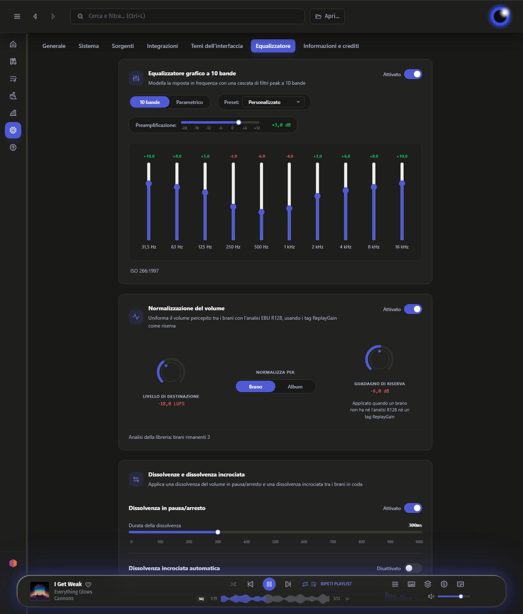
Parametrico
•
Trascina un nodo per impostarne la frequenza e il guadagno. Scorri su di esso per renderlo più largo o più stretto (Q).
•
Fai doppio clic sul grafico per aggiungere una banda, fino a 20. La tabella qui sotto elenca tipo, valori e interruttore di attivazione di ogni banda.
•
Reimposta bande riporta tutto a piatto.
•
Il menu ⋯ accanto al preset contiene le azioni sui preset:
– Importa… carica un profilo di correzione per cuffie (vedi sotto).
– Esporta… salva le bande e la preamplificazione come file di Equalizer APO.
– Salva con nome… conserva le bande attuali come preset personale, in I miei preset.
– Rinomina ed Elimina gestiscono i tuoi preset.
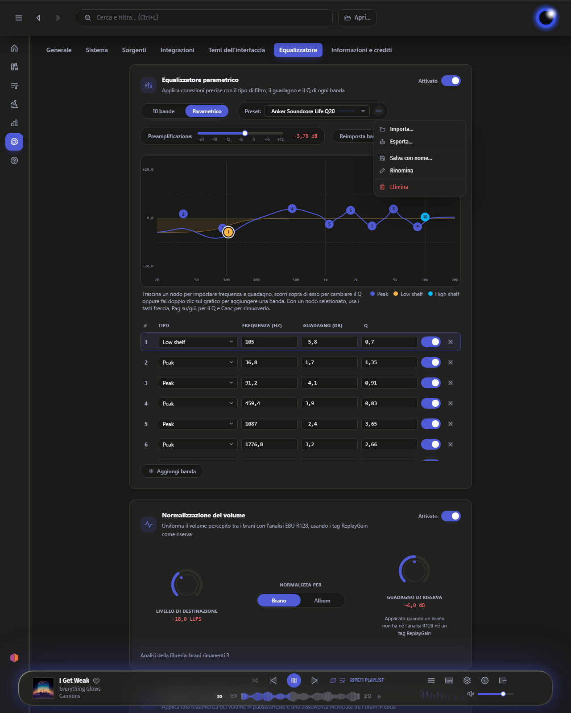
Correggi le tue cuffie
•
Trova le tue cuffie su AutoEq, scegli EqualizerAPO ParametricEq come app di equalizzazione e scarica il file delle impostazioni.
•
In Parametrico, scegli Importa… dal menu ⋯, poi Scegli file… oppure incolla il testo.
•
Il profilo viene salvato in I miei preset e applicato subito. Se Luminous non riesce a riprodurlo esattamente, indica la riga con il problema e non cambia nulla.
Normalizzazione del volume
•
Attivala per uniformare il volume tra i brani.
•
Livello di destinazione imposta quanto forte suona tutto.
•
Normalizza perAlbum mantiene le differenze di volume tra i brani dello stesso album.
•
I brani non ancora analizzati usano i loro tag ReplayGain oppure il Guadagno di riserva.
Dissolvenze di riproduzione e dissolvenza incrociata
•
Dissolvenza in pausa/arresto abbassa gradualmente il volume invece di interromperlo di colpo.
•
Dissolvenza incrociata manuale fonde i brani quando passi al successivo; Dissolvenza incrociata automatica li fonde quando un brano finisce.
•
Mantieni la riproduzione senza interruzioni nello stesso album mantiene continui gli album dal vivo e quelli concettuali.
Impostazioni
Temi dell'interfaccia
Scegli un tema
•
Luminous colora l'intera app a partire dalla copertina dell'album in riproduzione. Ti piace un risultato? Salvalo come tema personalizzato.
•
Sistema segue l'impostazione chiara o scura del sistema. Usa i pulsanti Chiaro, Scuro e Sistema sulla sua scheda per fissarne uno.
•
Fai clic su un qualsiasi tema predefinito per passare a esso.
Temi aggiuntivi per i sostenitori (solo versione Microsoft Store)
•
Temi extra con grafica e animazioni proprie. Fai clic sul pulsante della scheda (Acquista a…, Acquista gratis oppure Ottieni) per aggiungerne uno, poi fai clic sulla scheda per usarlo.
•
Non vedi il tuo acquisto? Fai clic su Verifica acquisti.
•
I temi aggiuntivi mantengono i propri colori; non si possono modificare.
Crea il tuo
•
Apri il Generatore di temi personalizzati per impostare i tuoi colori.
•
Usa Importa tema per aggiungere un tema da un file. Ogni scheda di tema personalizzato si può modificare, esportare o eliminare.
Movimento
•
Se è attiva l'impostazione di riduzione del movimento del sistema, le animazioni a scorrimento diventano morbide dissolvenze.
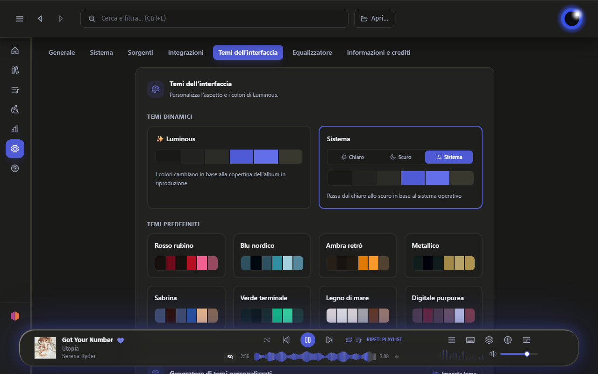
Consigli e trucchi
Scorciatoie da tastiera
Riproduzione
Spazio
Riproduci / pausa
←
Traccia precedente
→
Traccia successiva
↑
Alza il volume
↓
Abbassa il volume
Pag ↑
Indietro di 10 s
Pag ↓
Avanti di 10 s
Navigazione
CtrlL
Vai alla barra di ricerca
Esc
Chiudi il menu a discesa della ricerca
CtrlO
Apri brano
Ctrl[
Indietro
Ctrl]
Avanti
CtrlA
Seleziona tutto nella vista elenco corrente
Layout e visualizzazione
Ctrl1
Mostra o nascondi la barra laterale sinistra
Ctrl2
Attiva o disattiva la modalità immersiva
Ctrl3oppureCtrlI
Mostra o nascondi il pannello informazioni
CtrlM
Attiva o disattiva il miniplayer
Ctrl,
Apri Impostazioni
Ctrl/
Mostra questo elenco
I pulsanti laterali del mouse e i tasti indietro/avanti dedicati del browser permettono anch'essi di spostarsi nella cronologia. I pulsanti multimediali della tastiera o del dispositivo controllano anch'essi la riproduzione.
Impostazioni
Informazioni e crediti
Il codice sorgente è su GitHub, insieme ai crediti di ogni libreria usata da Luminous e alla licenza con cui è condiviso.
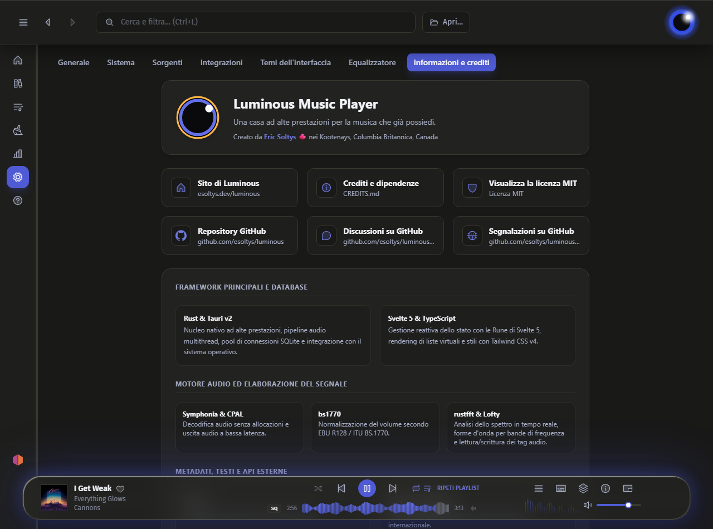
Consigli e trucchi
Menu contestuali e selezione multipla
•
Fai clic con il tasto destro su un brano per Riproduci, Aggiungi a playlist, Vai all'artista, Vai all'album, Modifica tag e altro.
•
Fai clic con il tasto destro su un album per Riproduci album, Aggiungi alla coda, Modifica le informazioni dell'album, Apri in Picard, Scheda da condividere..., Fissa nella Home e Non includere nelle statistiche.
•
Maiusc + clic seleziona un intervallo, Ctrl + clic aggiunge righe, e CtrlA seleziona tutto nell'elenco.
•
Con dei brani selezionati, una barra degli strumenti offre Riproduci selezionati, Aggiungi a playlist e Deseleziona tutto.